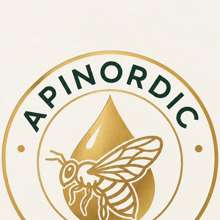

Mehiläisemme
Kaiken lähtökohta. Hyvinvoiva mehiläisyhdyskunta on meille tärkein.

APINORDICSUOMALAISTA HUNAJAA · VARSINAIS-SUOMI
APINORDIC syntyy suomalaisen luonnon, kukkien ja mehiläisten ainutlaatuisesta yhteistyöstä.
Tutustu hunajaammePURE · NORDIC · AUTHENTIC
MEIDÄN HUNAJAMME
Hunajamme kerätään Varsinais-Suomen kukkivasta luonnosta. Jokainen sato kertoo oman tarinansa kasvukaudesta, säästä ja mehiläisten ympärillä avautuvasta maisemasta.
Mahdollisimman vähän käsittelyä. Mahdollisimman paljon luonnon omaa makua.
MEIDÄN TARINAMME
Nimemme yhdistää mehiläisen – latinaksi apis – ja pohjoisen luonnon. APINORDIC on kunnianosoitus mehiläisille, suomalaiselle maisemalle ja huolelliselle mehiläishoidolle.
Kaiken lähtökohta. Hyvinvoiva mehiläisyhdyskunta on meille tärkein.
Pölytys tukee ympäröivää kasvillisuutta ja luonnon monimuotoisuutta.
Kukasta pesään, pesästä purkkiin – jokaisen pisaran takana on tuhansia lentoja.
TULOSSA MYÖHEMMIN
Tähän osioon rakentuu myöhemmin mahdollisuus tutustua APINORDICin pesäosakkuuteen ja kummikovan kaltaisiin vaihtoehtoihin. Sisältö ja ehdot julkaistaan myöhemmin.
Sisältö tulossa“Kukasta purkkiin.”
APINORDIC · FINNISH HONEYYHTEYS
APINORDIC
Varsinais-Suomi, Finland